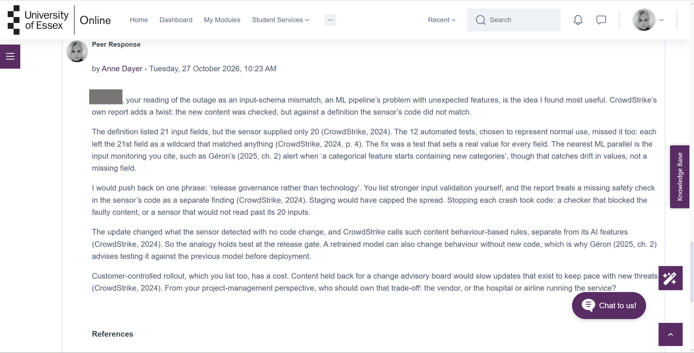
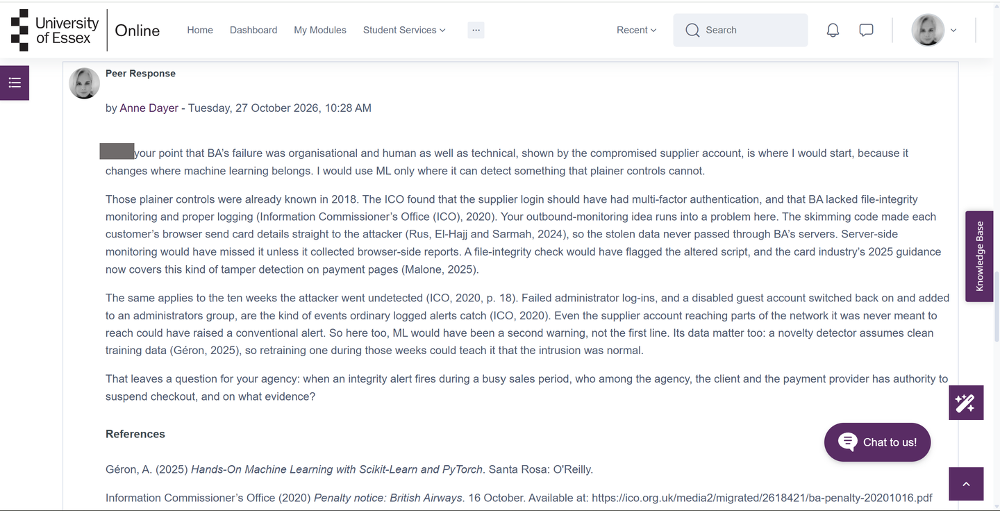
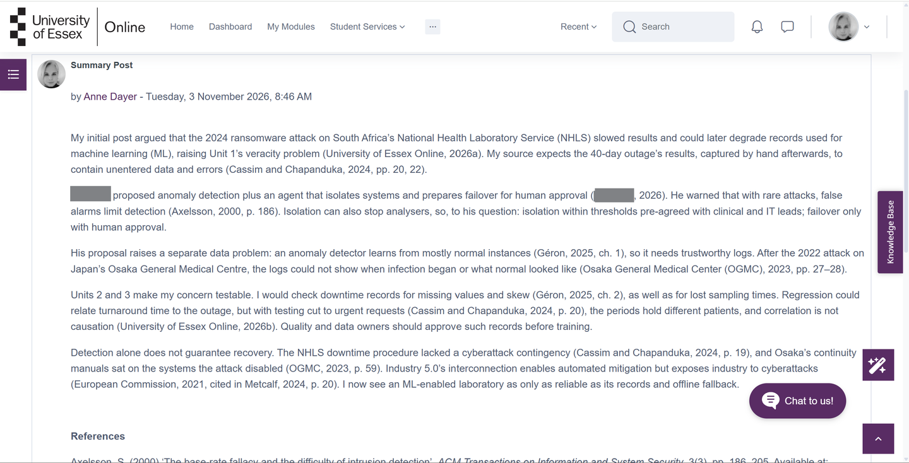

The Activity
Units 1–3 · Posted 22 October to 3 November 2026 · Tutor: Dr Elizabeth Oladapo · Evidences learning outcomes 2 and 4
Discussion question: read Metcalf (2024) and discuss the impact of Industry 4.0 and/or Industry 5.0 on the sector in which I am involved or interested, through a specific information-system failure that had a significant impact and is not covered in the reading list.
Structure set by the brief: an initial post of at least 200 words in Unit 1, at least two peer responses of 200–300 words in Unit 2 focusing on measures that could have prevented the incidents, and a 300-word summary post in Unit 3 drawing on the initial post, the peer feedback and the content of the three units. UoEO Harvard referencing throughout.
The forum contribution is not individually marked. It is a component of the e-portfolio submitted in Unit 12.
My Thread: Initial Post
Unit 1 · Posted 22 October 2026 · 323 words
In the clinical laboratory sector, Industry 4.0 links analysers, information systems and datasets. Metcalf (2024, p. 2) defines the era by cyber-physical systems; connecting them means disruption to one reaches the others.
On 22 June 2024, a ransomware attack on South Africa’s National Health Laboratory Service made ordering, reporting and historical data inaccessible. Turnaround times mostly doubled; at Tygerberg Hospital, a full blood count reached four hours against a target of under two, staff fell back on paper results and messaging apps, and decisions slowed as workloads rose (Cassim and Chapanduka, 2024). Manual reporting kept results moving, with completeness and confidentiality at risk. The account covers one department, lists costs from lost income to IT upgrades without totals, and judges the NHLS response reactive and inadequate.
The attack was not a machine-learning failure, but it could affect future training data. With urgent tests prioritised and some results recorded by hand, that period’s records may be incomplete and skewed towards severe cases, the lecturecast’s veracity problem (University of Essex Online, 2026a). This is a risk, not a documented outcome; such records would need missingness and representativeness checks before training, given the reliability concerns Gröger et al. (2025) discuss.
One could call this a security failure rather than an Industry 4.0 one; preventing failures and limiting consequences remain different design responsibilities, and Industry 5.0’s resilience speaks to the second: “maximum efficiency leaves no excess capacity for change” (Metcalf, 2024, p. 20). Safeguards include backups, a downtime procedure that anticipates a cyber breach (the NHLS one did not) and alternative routes for results, from Cassim and Chapanduka’s (2024) continuity plan and EFLM guidance (Lippi et al., 2025). I would ask a cross-functional group, led by the quality lead with the data owner and IT, to assess the release of restored results and their suitability for training separately.
Should laboratories prioritise more predictive automation or demonstrate first that essential services can continue safely when digital systems fail?
My Thread: Feedback Received
Unit 2 · A.B. replied on 24 October 2026
The reply is summarised in my own words rather than reproduced, and credited by initials.
A.B.: a third option between prevention and manual downtime
A.B. took up my distinction between preventing failures and limiting their consequences, and proposed a third option: anomaly detection that learns a laboratory’s normal network and file activity, with an agent that isolates affected systems and prepares failover to a disaster-recovery site. The reply then questioned its own proposal. Attacks are rare, so even an accurate detector can raise more false alarms than real ones, and an unneeded failover could itself interrupt testing. It suggested a graded approach in which a human approves the final switch, and asked whether I would trust an agent to fail over automatically.
What I did with it. My summary post answers the question: isolation within thresholds agreed in advance with clinical and IT leads, failover only with human approval. It also adds a data problem the proposal raises: a detector that learns what is normal needs trustworthy logs, which the Osaka hospital investigation showed may not exist after an attack.
My Thread: Summary Post
Unit 3 · Posted 3 November 2026 · 319 words
My initial post argued that the 2024 ransomware attack on South Africa’s National Health Laboratory Service (NHLS) slowed results and could later degrade records used for machine learning (ML), raising Unit 1’s veracity problem (University of Essex Online, 2026a). My source expects the 40-day outage’s results, captured by hand afterwards, to contain unentered data and errors (Cassim and Chapanduka, 2024, pp. 20, 22).
A.B. proposed anomaly detection plus an agent that isolates systems and prepares failover for human approval. He warned that with rare attacks, false alarms limit detection (Axelsson, 2000, p. 186). Isolation can also stop analysers, so, to his question: isolation within thresholds pre-agreed with clinical and IT leads; failover only with human approval.
His proposal raises a separate data problem: an anomaly detector learns from mostly normal instances (Géron, 2025, ch. 1), so it needs trustworthy logs. After the 2022 attack on Japan’s Osaka General Medical Centre, the logs could not show when infection began or what normal looked like (Osaka General Medical Center (OGMC), 2023, pp. 27–28).
Units 2 and 3 make my concern testable. I would check downtime records for missing values and skew (Géron, 2025, ch. 2), as well as for lost sampling times. Regression could relate turnaround time to the outage, but with testing cut to urgent requests (Cassim and Chapanduka, 2024, p. 20), the periods hold different patients, and correlation is not causation (University of Essex Online, 2026b). Quality and data owners should approve such records before training.
Detection alone does not guarantee recovery. The NHLS downtime procedure lacked a cyberattack contingency (Cassim and Chapanduka, 2024, p. 19), and Osaka’s continuity manuals sat on the systems the attack disabled (OGMC, 2023, p. 59). Industry 5.0’s interconnection enables automated mitigation but exposes industry to cyberattacks (European Commission, 2021, cited in Metcalf, 2024, p. 20). I now see an ML-enabled laboratory as only as reliable as its records and offline fallback.
Responses I Wrote on Other Students’ Threads
Unit 2 · Posted 27 October 2026 · Two responses
The brief asks each response to concentrate on the measures that could have prevented the incident raised. Both incidents are security failures, and in both I argue that conventional controls came first and machine learning second.
Response 1: on the 2024 CrowdStrike outage
308 words · A.B.’s post read the outage as an input-schema mismatch
A.B., your reading of the outage as an input-schema mismatch, an ML pipeline’s problem with unexpected features, is the idea I found most useful. CrowdStrike’s own report adds a twist: the new content was checked, but against a definition the sensor’s code did not match.
The definition listed 21 input fields, but the sensor supplied only 20 (CrowdStrike, 2024). The 12 automated tests, chosen to represent normal use, missed it too: each left the 21st field as a wildcard that matched anything (CrowdStrike, 2024, p. 4). The fix was a test that sets a real value for every field. The nearest ML parallel is the input monitoring you cite, such as Géron’s (2025, ch. 2) alert when ‘a categorical feature starts containing new categories’, though that catches drift in values, not a missing field.
I would push back on one phrase: ‘release governance rather than technology’. You list stronger input validation yourself, and the report treats a missing safety check in the sensor’s code as a separate finding (CrowdStrike, 2024). Staging would have capped the spread. Stopping each crash took code: a checker that blocked the faulty content, or a sensor that would not read past its 20 inputs.
The update changed what the sensor detected with no code change, and CrowdStrike calls such content behaviour-based rules, separate from its AI features (CrowdStrike, 2024). So the analogy holds best at the release gate. A retrained model can also change behaviour without new code, which is why Géron (2025, ch. 2) advises testing it against the previous model before deployment.
Customer-controlled rollout, which you list too, has a cost. Content held back for a change advisory board would slow updates that exist to keep pace with new threats (CrowdStrike, 2024). From your project-management perspective, who should own that trade-off: the vendor, or the hospital or airline running the service?
Response 2: on the 2018 British Airways breach
295 words · L.K.’s post treated the failure as organisational and human as well as technical
L.K., your point that BA’s failure was organisational and human as well as technical, shown by the compromised supplier account, is where I would start, because it changes where machine learning belongs. I would use ML only where it can detect something that plainer controls cannot.
Those plainer controls were already known in 2018. The ICO found that the supplier login should have had multi-factor authentication, and that BA lacked file-integrity monitoring and proper logging (Information Commissioner’s Office (ICO), 2020). Your outbound-monitoring idea runs into a problem here. The skimming code made each customer’s browser send card details straight to the attacker (Rus, El-Hajj and Sarmah, 2024), so the stolen data never passed through BA’s servers. Server-side monitoring would have missed it unless it collected browser-side reports. A file-integrity check would have flagged the altered script, and the card industry’s 2025 guidance now covers this kind of tamper detection on payment pages (Malone, 2025).
The same applies to the ten weeks the attacker went undetected (ICO, 2020, p. 18). Failed administrator log-ins, and a disabled guest account switched back on and added to an administrators group, are the kind of events ordinary logged alerts catch (ICO, 2020). Even the supplier account reaching parts of the network it was never meant to reach could have raised a conventional alert. So here too, ML would have been a second warning, not the first line. Its data matter too: a novelty detector assumes clean training data (Géron, 2025), so retraining one during those weeks could teach it that the intrusion was normal.
That leaves a question for your agency: when an integrity alert fires during a busy sales period, who among the agency, the client and the payment provider has authority to suspend checkout, and on what evidence?
L.K.’s reply, 29 October 2026
Summarised in my own words. L.K. agreed that multi-factor authentication, logging and conventional alerting should have come first, with machine learning as support, and that server-side monitoring would miss data sent straight from customers’ browsers. The reply qualified my file-integrity point: scripts loaded from external providers can change without any merchant-hosted file changing, which is why the payment-card standard now addresses scripts as the browser receives them. On my question, L.K. argued that authority should be agreed before an incident, with the client keeping commercial decisions and the agency contractually allowed to take emergency action.
What I did with it. The reply changed where I would place the integrity check. My response said a file-integrity check would have flagged BA’s altered script, which assumes the script sits on the merchant’s own servers. A script loaded from an outside provider can change while every file BA hosts stays the same, so the check belongs on what the customer’s browser actually receives, not only on what the merchant stores.
Evidence
Screenshots of my own posts in the forum. Classmates’ names are covered, and their replies appear above as summaries only.



AI Acknowledgement
Codex was used to assist in identifying appropriate code solutions and to proofread and refine the code I produced. Claude and Grammarly supported proofreading, language refinement, and formatting of my written text. All final decisions, analyses, interpretations, conclusions, and recommendations are my own.
References
A note on this list
One consolidated list replaces the four posted lists. Entries follow the module’s Cite Them Right forms, so some differ in detail from the posts as submitted; the posts themselves are unchanged in the forum. The two lecturecasts are labelled 2026a and 2026b here, so the initial post’s citation of the Unit 1 lecturecast reads 2026a.
Classmates appear by initials only. In the forum, the summary post cites A.B.’s reply by name with its own reference entry; here that citation and entry are removed and the contribution is credited by initials. Sources that classmates brought into their replies are left out of the list, since I have not read them.
Axelsson, S. (2000) ‘The base-rate fallacy and the difficulty of intrusion detection’, ACM Transactions on Information and System Security, 3(3), pp. 186–205. Available at: https://doi.org/10.1145/357830.357849
Cassim, S. and Chapanduka, Z.C. (2024) ‘Cyberattack on the National Health Laboratory Service of South Africa – implications, response and recommendations’, South African Medical Journal, 114(12), e2549. Available at: https://doi.org/10.7196/SAMJ.2024.v114i12.2549
CrowdStrike (2024) External technical root cause analysis: Channel File 291. 6 August. Available at: https://www.crowdstrike.com/wp-content/uploads/2024/08/Channel-File-291-Incident-Root-Cause-Analysis-08.06.2024.pdf (Accessed: 25 October 2026).
Géron, A. (2025) Hands-On Machine Learning with Scikit-Learn and PyTorch. Santa Rosa: O’Reilly.
Gröger, F. et al. (2025) ‘A review and systematic guide to counteracting medical data scarcity for AI applications’, Computer Methods and Programs in Biomedicine Update, 8, 100220. Available at: https://doi.org/10.1016/j.cmpbup.2025.100220
Information Commissioner’s Office (2020) Penalty notice: British Airways. 16 October. Available at: https://ico.org.uk/media2/migrated/2618421/ba-penalty-20201016.pdf (Accessed: 25 October 2026).
Lippi, G. et al. (2025) ‘EFLM Task Force Preparation of Labs for Emergencies (TF-PLE) recommendations for reinforcing cyber-security and managing cyber-attacks in medical laboratories’, Clinical Chemistry and Laboratory Medicine, 63(1), pp. 27–34. Available at: https://doi.org/10.1515/cclm-2024-0803
Malone, A. (2025) ‘New information supplement: payment page security and preventing e-skimming’, PCI Perspectives, 10 March. Available at: https://blog.pcisecuritystandards.org/new-information-supplement-payment-page-security-and-preventing-e-skimming (Accessed: 25 October 2026).
Metcalf, G.S. (2024) ‘An introduction to Industry 5.0: history, foundations, and futures’, in Nousala, S., Metcalf, G.S. and Ing, D. (eds) Industry 4.0 to Industry 5.0: explorations in the transition from a techno-economic to a socio-technical future. Singapore: Springer, pp. 1–29. Available at: https://doi.org/10.1007/978-981-99-9730-5_1
Osaka General Medical Center (2023) Chōsa hōkokusho [Investigation report] (in Japanese). Report of the Information Security Incident Investigation Committee. Osaka: Osaka Prefectural Hospital Organization, 28 March. Available at: https://www.gh.opho.jp/pdf/report_v01.pdf (Accessed: 2 November 2026).
Rus, A.-C., El-Hajj, M. and Sarmah, D.K. (2024) ‘NAISS: a reverse proxy approach to mitigate MageCart’s e-skimmers in e-commerce’, Computers & Security, 140, 103797. Available at: https://doi.org/10.1016/j.cose.2024.103797
University of Essex Online (2026a) ‘Unit 1 Lecturecast: Introduction to Machine Learning’ [Lecturecast]. ML_PCOM7E: Machine Learning October 2026. University of Essex Online. Available at: https://www.my-course.co.uk/pluginfile.php/1659667/mod_scorm/content/1/scormcontent/index.html (Accessed: 21 October 2026).
University of Essex Online (2026b) ‘Unit 3 Lecturecast: Correlation and Regression’ [Lecturecast]. ML_PCOM7E: Machine Learning October 2026. University of Essex Online. Available at: https://www.my-course.co.uk/pluginfile.php/1659683/mod_scorm/content/2/scormcontent/index.html (Accessed: 22 October 2026).
European Commission (2021) is cited as it appears in Metcalf (2024, p. 20), the source consulted, following the secondary referencing convention in the UoEO guide.